Hero-блок
Доработала выбранную концепцию первого экрана.
кейс_03
Редизайн сайта
В составе команды из четырёх дизайнеров полностью переработали визуальный стиль сайта московского планетария, спроектировали новые страницы и адаптировали интерфейс под desktop, tablet и mobile.
В проекте я участвовала в анализе конкурентов и поиске визуального направления, разработала концепцию hero-блока, которая была выбрана командой для дальнейшей работы, отвечала за hero и блок «График работы», а также участвовала в создании и поддержке UI-kit.
01
Перед нами стояла задача полностью обновить визуальный стиль сайта Планетария. Существующий дизайн воспринимался заказчиком как устаревший, поэтому команда получила свободу в работе с цветом, типографикой, композицией и общей стилистикой интерфейса.
Кроме редизайна существующих страниц, нужно было расширить структуру сайта:
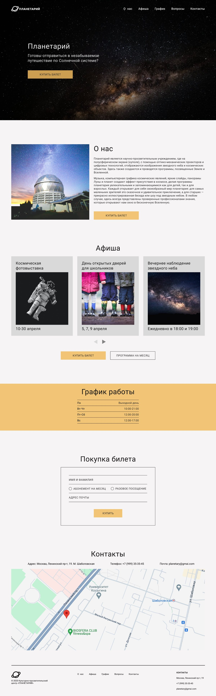
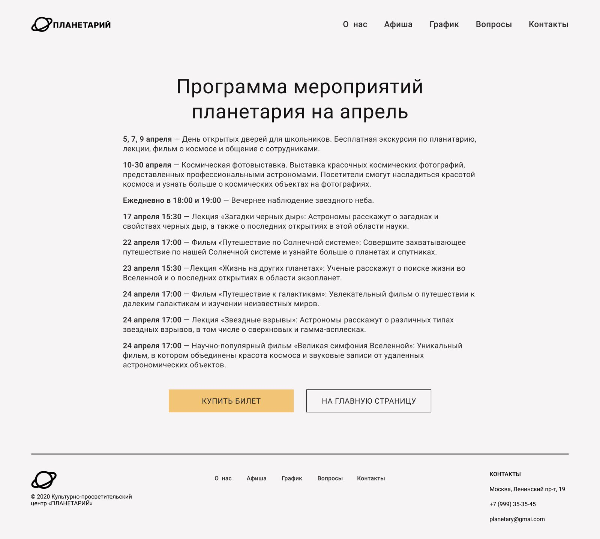
02
Перед началом редизайна мы разделили исследовательскую часть между участниками команды. Были проанализированы 3 сайта конкурентов, отдельно были проработаны целевая аудитория и пользовательские сценарии.
Моей задачей был анализ сайта «Планетарий №1» в Санкт-Петербурге. Я рассмотрела его с трёх сторон: юзабилити, визуальной составляющей и функциональности, чтобы определить удачные решения и проблемы, которые стоит учитывать при редизайне.
Сайт хорошо передавал атмосферу космоса, но визуально был перегружен, а часть ключевых пользовательских действий — например, выбор мероприятия и покупка билета — можно было сделать проще и понятнее.
03
После анализа каждая участница команды подготовила собственное визуальное направление: ассоциативное поле, настроенческие и функциональные референсы, палитру и шрифтовую пару.
В своём варианте я сделала ставку на тёмную палитру с яркими цветовыми акцентами, крупные изображения и сочетание выразительной акцидентной типографики с нейтральным шрифтом для основного текста.
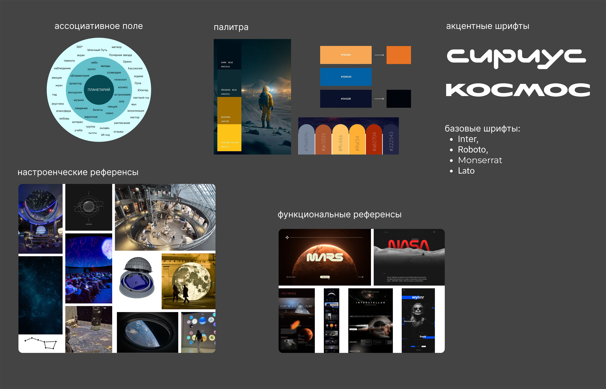
1 из 4
Выбор команды
Из четырёх предложенных направлений команда выбрала разработанные мной палитру и шрифтовую пару для дальнейшего дизайна проекта.
На следующем этапе каждая из нас разработала свой вариант первого экрана. После совместного просмотра для дальнейшей работы был выбран мой вариант hero-блока.
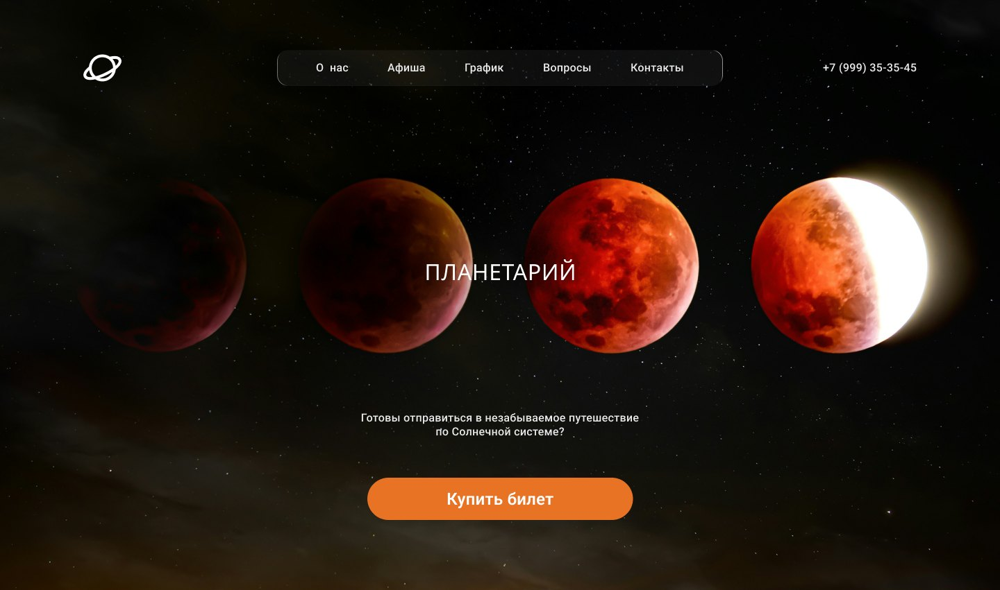
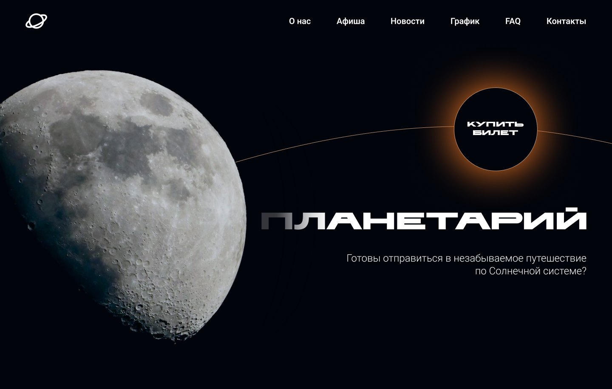
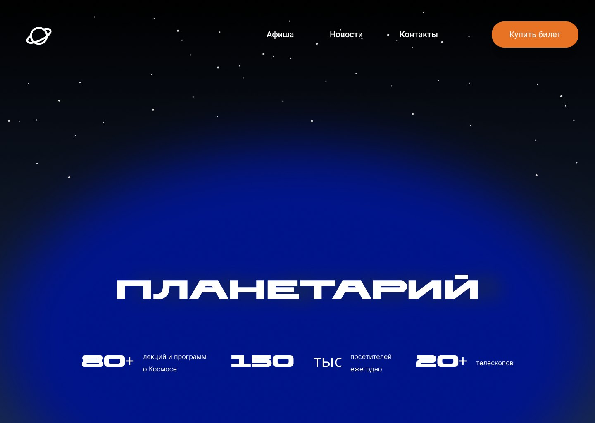
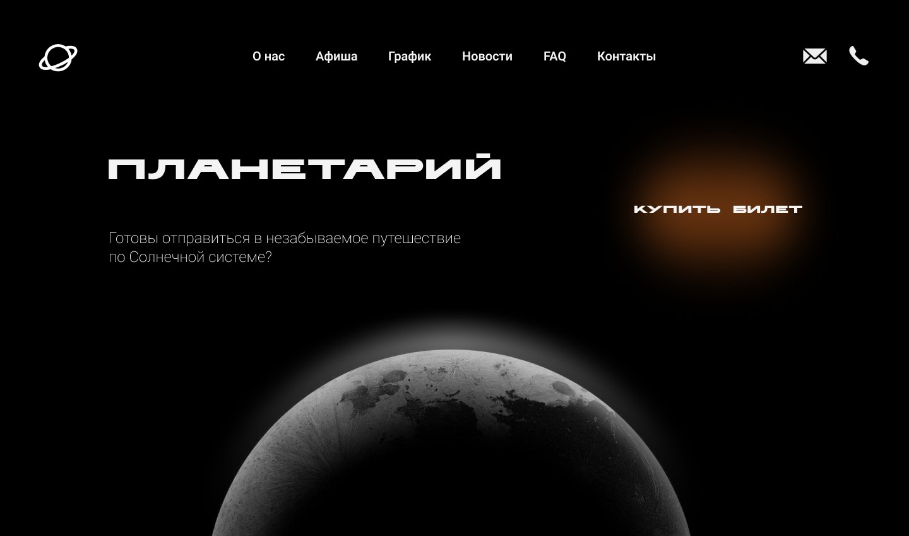
Выбранная концепция ↓
04
После выбора визуального направления команда перешла к структуре страниц и wireframes. Были спроектированы:
На главной появились новые блоки «Новости» и FAQ, которых не было в исходной версии сайта.
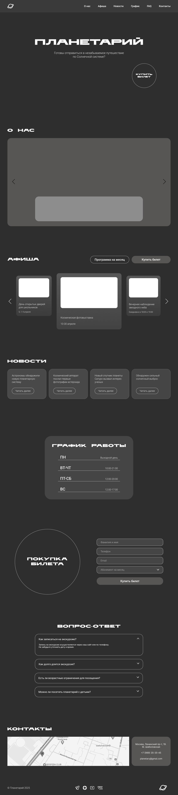
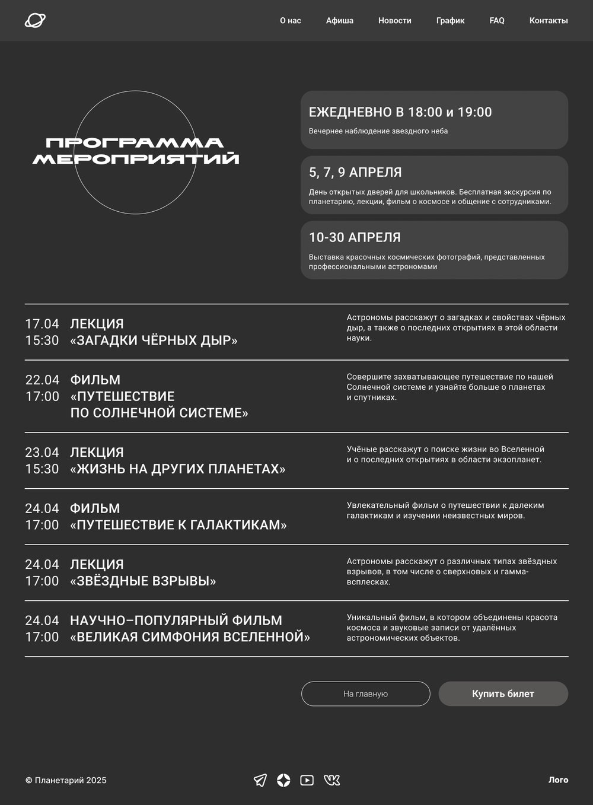
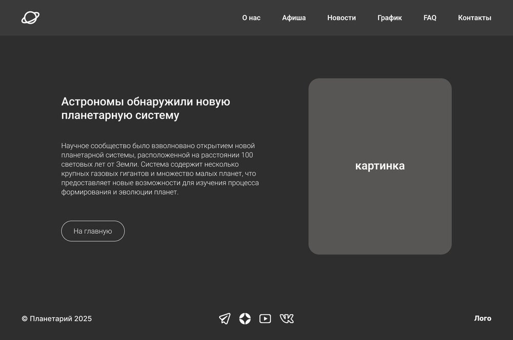
05
Доработала выбранную концепцию первого экрана.
Спроектировала и оформила блок с расписанием работы Планетария.
Проработала desktop-, tablet- и mobile-версии своих секций.
Подготовила анимацию одного из своих блоков и добавила соответствующий вариант в общую систему компонентов.
06
Параллельно с работой над страницами команда развивала общий UI-kit. Я участвовала в его создании и следила за тем, чтобы мои блоки и адаптивные версии оставались согласованными с общей системой.
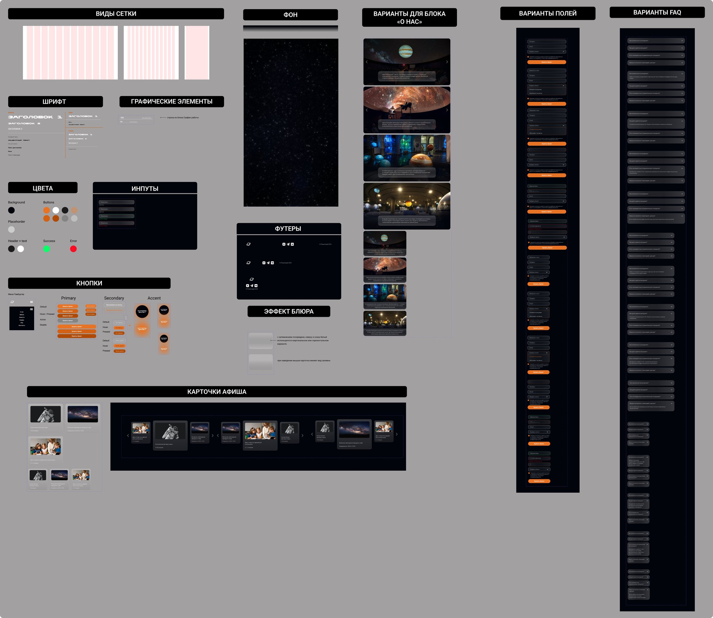
07
После завершения desktop-версий мы адаптировали страницы под планшеты и мобильные устройства. Для ключевых элементов также были подготовлены интерактивные состояния и анимации.
На финальном этапе все страницы были объединены в кликабельный прототип.
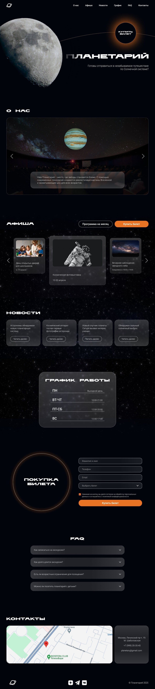
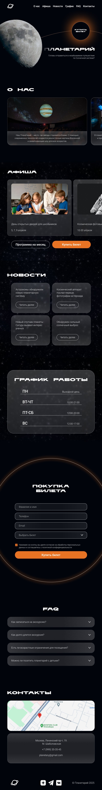
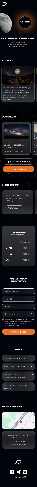
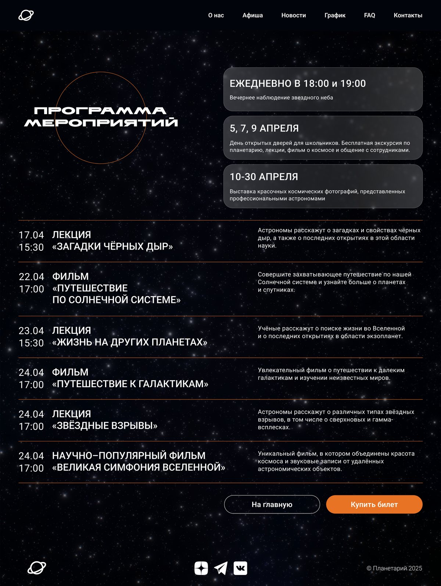
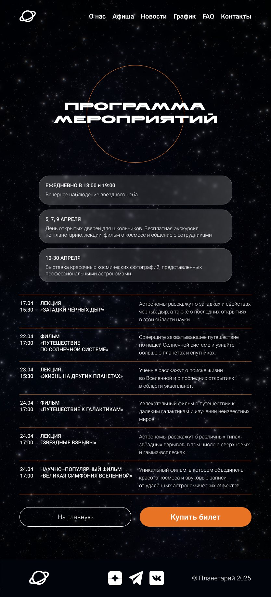
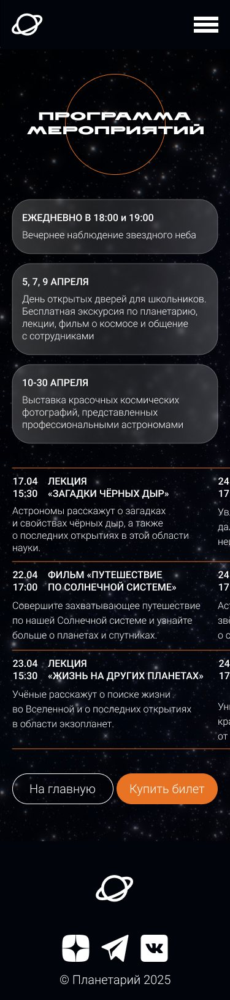
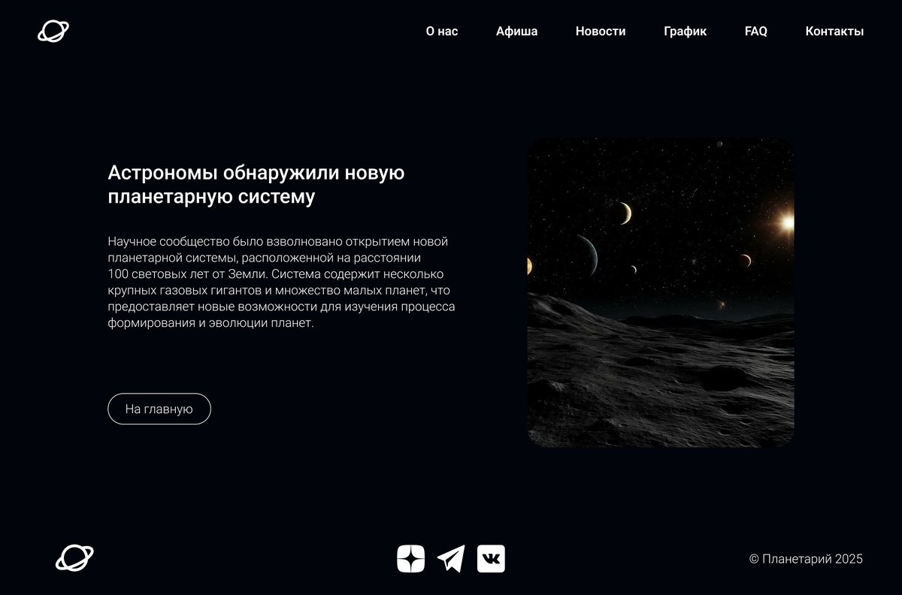
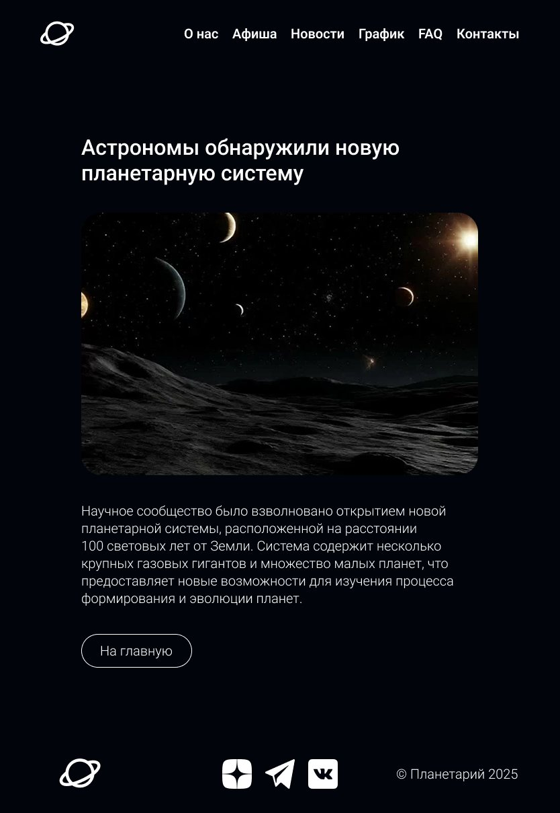
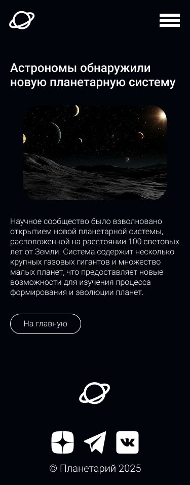
Итог
Для меня этот проект стал важным опытом командной работы над большим интерфейсом: от анализа и поиска визуального направления до работы внутри общей системы компонентов.
Мои палитра, шрифтовая пара и hero-концепция стали основой финального визуального решения, а в дальнейшей работе я отвечала за собственные блоки, их адаптивы и часть UI-kit.